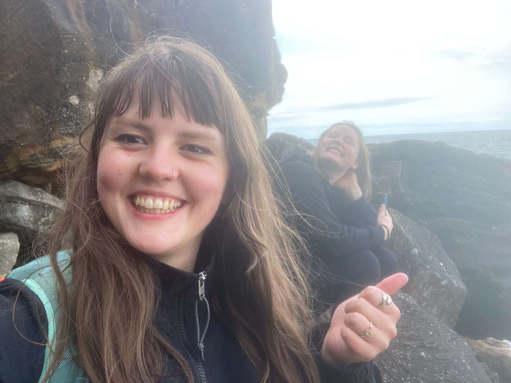
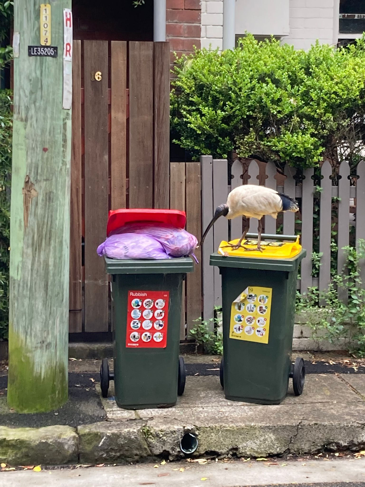

Reisetagebuch
.jpg)
Kapitel 1: Die Anreise
Manchmal wünscht man sich auf einer Reise, dass es einfach niemals endet. Dass hinter der Kurve noch unendlich mehr kommen. Dass hinter dem nächsten Berg noch ein höherer wartet. Dass man noch nicht wieder nach Hause in den Alltag zurück muss.
Der Flug nach Australien war absolut keine Reise dieser Art.
Ich wollte einfach nur ankommen.
Es standen mir 37 Stunden auf Straßen, in Flughafen-Wartebereichen und tausende Meter über dem Boden bevor. Gefüllt mit manchmal spannenden, langweiligen und anstrengenden Gesprächen, vier fragwürdige Flugzeug-Mahlzeiten und viel, viel Warten. Das ich dabei einmal um die halbe Welt fliege, Hong Kong aufgrund von Regenwetter nicht sehe und währenddessen noch neun Stunden meines Lebens durch die Zeitverschiebung verliere, fiel durch den Abschied von meiner Familie und meinen Freunden und den permanenten Schlafmangel kaum auf.
Flug Nr. 1 Frankfurt, 21:50, 30.09.22 --> Hong Kong, 15:00, 1.10.22: Zufälle sind schon manchmal witzig. Als Alleinreisende war ich natürlich gespannt, wer neben mir sitzen wird. Und als ich meinen Platz gefunden habe, am Gang mit nur einer weiteren Person neben mir, wusste ich, dass der Flug gut wird. Marlene, circa mein Alter, auf dem Weg nach Neuseeland, um dort Work and Travel zu machen und danach noch durch Australien zu reisen. Wir verstanden und sofort gut und haben den halben Flug über Lebensvorstellungen, Reisepläne und alles Mögliche geredet. Das heißt Alleine fühlen, war schon mal nicht angesagt, weil ich jemanden um mich hatte, die in eine ähnliche Ungewissheit reist.
Im Transit: 8 Stunden Hong Kong: Der Flughafen hat sich wie ausgestorben angefühlt. China ist immernoch sehr streng, was Corona angeht und somit wurden quasi nur Flüge in andere Länder bedient. Das heißt eher weniger Menschen und ausreichend Platz, um Dehnübungen zu machen damit die Beine wieder klarkommen. Irgendwann war es auch an der Zeit für den nächsten Abschied und es ging wieder vollkommen alleine weiter.
Flug Nr. 2 Hong Kong, 23:55, 1.10.22 --> Sydney, 11:30, 2.10.22: Jetzt wird’s ernst. Der Flug, der mich an den Ort bringen wird, wo ich die nächsten 6 Monate meines Lebens verbringen werde. Diesmal wieder ein Gangplatz aber leider in der Mitte. Das heißt keine Chance auf einen Blick aus dem Fenster. Und mein Nachbar ein Nepalese, sehr nett, aber doch etwas zu gesprächig mit seinem Sohn, der vor uns sitzt, seiner Frau die schräg zwei Reihen hinter uns sitzt und seiner Mutter. Das heißt immer mal wieder schönes durch die Gegend-Gerufe. Und ich darf noch Übersetzerin für die aufwendige Declaration spielen. Australien weiß nun eine ganze Menge über mich und ich weiß eine ganze Menge über seine gesamte Familie.
Angekommen am Flughafen durfte ich zuerst noch darum bangen, ob ich die ganzen Mitbringsel und Weihnachtssüßigkeiten einführen darf, aber das war zum Glück kein Problem. Und die zwei verbotenen Garten-Tomätchen, die mich ein halbes Vermögen hätten kosten können, habe ich Vergessen und die Mitarbeiten haben sie auch nicht gefunden.
In Sydney hat mich dann ein strahlend blauer Himmel begrüßt und ich bin erst einmal mit dem Bus zu meinem Hostel, das Summerhouse Newtown, gefahren. Dort angekommen konnte ich eine unteres Bett ergattern, dass ich die nächsten drei Wochen mein Zuhause nennen werde. Und bin Todmüde noch den halben Tag durch die Gegend gelaufen, bevor ich sehr früh eingeschlafen bin.
Kapitel 2: Neue Freunde und die Blue Mountains


Am Ostufer der Lavender Bay befindet sich der 1935 eröffnete Luna Park. Das Freizeitzentrum wird wegen Protesten der Anwohner über den Lärm der Achterbahn nur zu besonderen Anlässen und Festtagen am Wochenende geöffnet.
Besonders bei Surfern und Touristen beliebt sind Sydneys zahlreiche Strände, allen voran Bondi Beach. Von dort führt der Bondi-Coogee Beachwalk abwechselnd über steile Klippen und mehrere Strände entlang nach Tamarama Beach, Bronte Beach, Clovelly Beach und schließlich Coogee Beach.
Darüber hinaus verfügt Sydney noch über zahlreiche weitere Strände, welche mit Ausnahme von Manly Beach hauptsächlich von Einheimischen genutzt werden. Die Sicherheit wird oft von Rettungssportclubs übernommen, die darüber hinaus auch andere Strandsportaktivitäten wie Nippers und Surf Carnevals organisieren.
Erwähnenswert ist die Freiluft-Skulpturenausstellung Sculpture by the Sea (Skulpturen am Meer) an den Stränden von Sydney, die seit 1997 von der Stadt veranstaltet wird. Künstler aus aller Welt zeigen ihre fantasiereichen Werke, von denen es rund 100 zu bestaunen gibt.


.jpg)